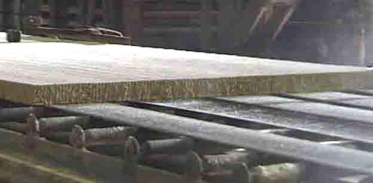
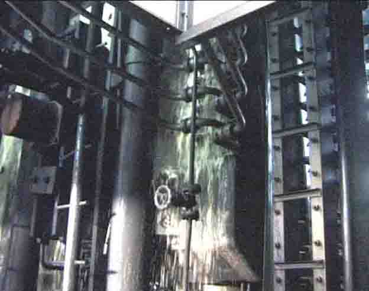

Wallboarden
Huntonit, tidligere Norsk Wallboard AS i Vennesla.
Her følger en bildeserie i lav oppløsning, hentet fra tidligere videofilm-opptak, gjort av Torvald Slettebø.

Norsk Wallboard startet opp sin fiberplateprodukjson like etter krigen. Og resultatet var så vellykket at det som egentlig var et varemerke, Huntonit, av folk flest ble oppfattet som en generell betegnelse på bygningsplater av trefiber.
Det ble etterhvert flere typer Huntonit, flere tykkelser og hardhetsgrader, også porøs Huntonit, som isolerte godt.
Alt kom fra det samme råstoffet, tømmer. Til denne produksjonen kunne det brukes mer varierende kvaliteter av tømmer og treavfall enn det papirframstilling tåler. Så Hunsfos og Wallboarden kunne fordele råstoffinntaket effektivt.

Tømmerstokken er ikke skikkelig barket. Det trengs ikke i plateproduksjonen. Den er i full fart på vei inn i kuttemaskinen, derfor ser den uskarp ut på bildet.
Det roterende knivhjulet har ikke riktig stanset, og er derfor også det uskarpt. Nå er tømmerstokken kuttet til fliser.
Flisene transporteres videre til sliping -
- på slike møllesteiner av stål. Stål-møllene har ulik grovhet. En liten del av slipemassen skal riktig finslipes, og legges som et øverste skikt på plata, så overflata kan presses glatt.
Selve mølla, med stålmøllesteinen under dekslet nærmest oss. Til høyre og utenfor bildet står det en liten mølle, for finsliping av masse til toppskiktet.
Her tømmes tresuppa ned i utløpskassen. Fra den skal den flyte ut på wiren, et endeløst transportbånd som skal forme fiberplata.
Tykt og mykt som treull er ennå laget som er på vandring mot venstre. Tykkelsen skal reduseres til mindre enn tiendeparten, ved avrenning, valsing, og til slutt brutal pressing.
Vannet tappes ut.
Trefiberbanen kuttes i passe platelengder av en tynn vannstråle under voldsomt trykk. Hardere er ikke platemassen ennå.
Tykkelsen har minket noe, og nå skal den hydrauliske pressa gjøre resten.
Plata er på vei inn i elevatoren, der plater stablet i mange etasjer mellom stålplater skal preses samtidig.
De hydrauliske sylindrene skaper et voldsomt trykk, som også utvikler kraftig varme. Brennheit damp velter ut, og plata får sin endelige tykkelse.
Og så går den på transportbelte videre for sluttbehandling.
Det skjer i to svære innelukkede karuseller, der platene står som eikene i et sykkelhjul. Her herdes de, og avkjøles jevnt, stabiliseres, heter det. Slik at de ikke senere skal slå seg og bli skeive og bulkete.
Struktur-overflate er mye brukt til vegg og tak. For at platene skal bli slik, må mønstres mot stålpalter i den hydrauliske pressa.
Her er værbitt eller sandblåst tre etterlignet.
Og de skal kanskje males, med valser i denne maskinen.
Malingen må tørke fort, mens platene passerer ultrarød varmestråling.
Mange varianter å velge mellom -
- når produktene fra Wallboarden skal ut til kundene.